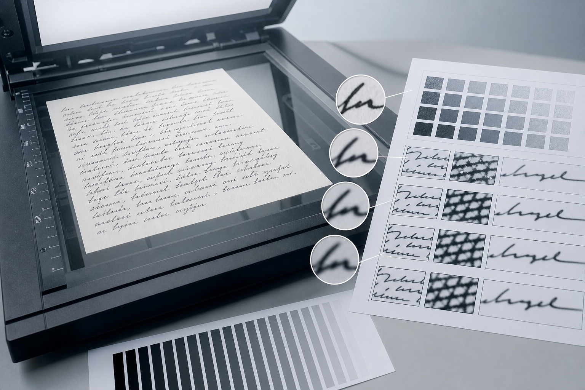
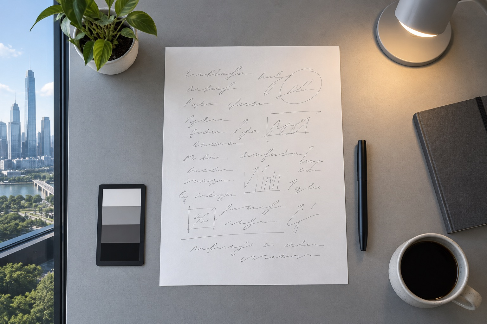
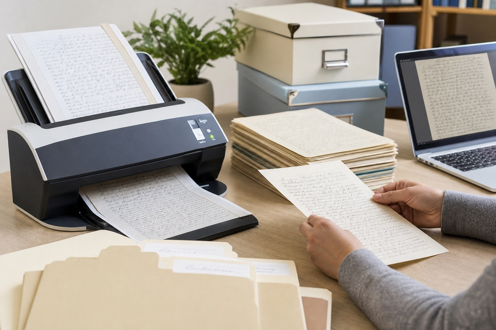

深圳线上提交手写图片，怎样保留模仿签字细节？
电子文件容易经过压缩、裁剪和重复转存。深圳站说明模仿笔迹、模仿签字、模仿签名与笔迹鉴定图片怎样保存尺寸和原始信息。

电子文件容易经过压缩、裁剪和重复转存。深圳站说明模仿笔迹、模仿签字、模仿签名与笔迹鉴定图片怎样保存尺寸和原始信息。
多设备传图最容易产生重复文件，先约定日期、页码和版本，归档后才能快速定位。本文从深圳实际资料整理角度说明页面、版本与原图的保存方法。

手机照片、扫描件和平板预览的尺寸与颜色不同，应在文件名中直接标明获取方式。本文从深圳实际资料整理角度说明页面、版本与原图的保存方法。
正式、日常和快速版本分别使用固定标签，既保留原文件名，也能看出使用场景。本文从深圳实际资料整理角度说明页面、版本与原图的保存方法。

深圳站线上资料新增版本日期与原图标记，围绕深圳模仿笔迹、模仿签名、模仿签字和笔迹鉴定更新服务资料。

深圳模仿笔迹线上资料怎么保存？手机原图与PDF整理方法，围绕深圳模仿笔迹、模仿签名、模仿签字和笔迹鉴定介绍资料准备方法。
围绕模仿笔迹、模仿签名、模仿签字和笔迹鉴定整理实用资料。

介绍服务内容、样本要求、价格因素和办理流程。

介绍签名服务范围、签字样本要求、费用与周期。

介绍笔迹鉴定范围、对比材料、费用周期和常见问题。

介绍手写文件、个人字体、字符数量和交付方式。